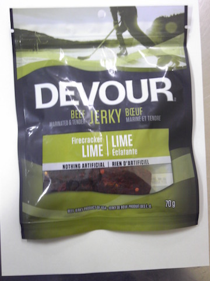
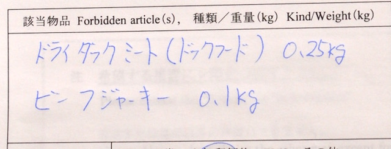

<!DOCTYPE html>
<html lang="en">
	<head>
		<title>The Problems with Beef Jerky in Japan | ブログ（英語） | Canada Club English School  </title>
		<!-- Published with the 'Sunny' theme, designed and developed by Will Woodgate - @willwoodgate -->
		
<!doctype html>
<html>
  <head>
    <script src="https://kit.fontawesome.com/f556c023a3.js" crossorigin="anonymous"></script>
  </head>

  <body>
    <!-- Ready to use Font Awesome. Activate interlock. Dynotherms - connected. Infracells - up. Icons are go! -->
  </body>
</html>

<script>
  !function(g,s,q,r,d){r=g[r]=g[r]||function(){(r.q=r.q||[]).push(
  arguments)};d=s.createElement(q);q=s.getElementsByTagName(q)[0];
  d.src='//d1l6p2sc9645hc.cloudfront.net/tracker.js';q.parentNode.
  insertBefore(d,q)}(window,document,'script','_gs');

  _gs('GSN-625828-H');
  _gs('set', 'anonymizeIP', true);
</script>
<meta http-equiv="Content-Type" content="text/html; charset=utf-8" />
		<meta name="robots" content="index, follow" />
		<meta name="generator" content="RapidWeaver" />
		
	<meta name="twitter:card" content="summary">
	<meta name="twitter:site" content="@canadaclubjp">
	<meta name="twitter:creator" content="@canadaclubjp">
	<meta name="twitter:image" content="https://canadaclubjp.com/resources/CCES-homepage-sitelogo2.jpg">
	<meta name="twitter:url" content="https:/canadaclubjp.com/blog/files/0a6e3c91a2489d7ff06e702c9adb258b-71.html">
	<meta property="og:type" content="website">
	<meta property="og:site_name" content="Canada Club English School  ">
	<meta property="og:image" content="https://canadaclubjp.com/resources/CCES-homepage-sitelogo2.jpg">
	<meta property="og:url" content="https:/canadaclubjp.com/blog/files/0a6e3c91a2489d7ff06e702c9adb258b-71.html">
		
		<meta name="viewport" content="width=device-width, initial-scale=1.0, user-scalable=yes">
		<link rel="stylesheet" type="text/css" media="all" href="../../rw_common/themes/sunny/consolidated.css?rwcache=701511614" />
		
		
		
		
		
		<style type="text/css" media="all"></script>

<div id='networkedblogs_nwidget_container' style='height:360px;padding-top:10px;'><div id='networkedblogs_nwidget_above'></div><div id='networkedblogs_nwidget_widget' style="border:1px solid #D1D7DF;background-color:#F5F6F9;margin:0px auto;"><div id="networkedblogs_nwidget_logo" style="padding:1px;margin:0px;background-color:#edeff4;text-align:center;height:21px;"><a href="http://www.networkedblogs.com/" target="_blank" title="NetworkedBlogs"></a></div><div id="networkedblogs_nwidget_body" style="text-align: center;"></div><div id="networkedblogs_nwidget_follow" style="padding:5px;"><a style="display:block;line-height:100%;width:90px;margin:0px auto;padding:4px 8px;text-align:center;background-color:#3b5998;border:1px solid #D9DFEA;border-bottom-color:#0e1f5b;border-right-color:#0e1f5b;color:#FFFFFF;font-family:'lucida grande',tahoma,verdana,arial,sans-serif;font-size:11px;text-decoration:none;" href="http://www.networkedblogs.com/blog/my-life-in-naruto?ahash=754065eb73ee06582252d1dcefb8807d">Follow this blog</a></div></div><div id='networkedblogs_nwidget_below'></div></div><script type="text/javascript">
if(typeof(networkedblogs)=="undefined"){networkedblogs = {};networkedblogs.blogId=1010175;networkedblogs.shortName="my-life-in-naruto";}
</script><script src="http://nwidget.networkedblogs.com/getnetworkwidget?bid=1010175" type="text/javascript"></script></style>
		
		
		<link rel="alternate" type="application/rss+xml" title="My Life in Naruto" href="https://canadaclubjp.com/blog/files/feed.xml" />
<script type="text/javascript" async src="https://canadaclubjp.com/blog/files/meta.js"></script>

	</head>
	<body class="hasBootstrap hasFreeStyle themeFlood">
		<div id="extraContainer1"></div>
		<div class="clearer"></div>
		<header id="header">
			<div id="headerContent">
				<div id="siteTitle" class="widthWrapper">
					<div id="extraContainer2"></div>
					<div id="logo"><a href="https://canadaclubjp.com/"></a></div>
					<div id="extraContainer3"></div>
					<h1><a href="https://canadaclubjp.com/">Canada Club English School  </a></h1>
					<h2></h2>
					<nav id="nav1" ><ul><li><a href="../../" rel="">ホーム</a></li><li><a href="../../page/" rel="">レッスンについて</a></li><li><a href="../../page-3/" rel="">講師について</a></li><li><a href="../../page-4/" rel="">よくある質問</a></li><li><a href="../../page-5/" rel="">お問い合わせ</a></li><li><a href="../" rel="" class="current">ブログ（英語）</a></li><li><a href="../../page-6/" rel="">レッスンの動画</a></li><li><a href="../../page-7/" rel="">Zoomの設定方法</a></li></ul></nav>
				</div>
			</div>
			<div id="scrollDownButton">
				<a href="#contentContainer" class="smoothscroll">
					<i class="far fa-arrow-alt-circle-down"></i>
				</a>
			</div>
		</header>
		<div id="contentContainerWrap">
			<div id="contentContainer" class="widthWrapper">
				<div id="extraContainer4"></div>
				<nav id="nav2" ><ul></ul></nav>
				<div id="content" role="main">
						
	<div class="blog-archive-entries-wrapper">
		<div id="unique-entry-id-71" class="blog-entry"><h1 class="blog-entry-title">The Problems with Beef Jerky in Japan</h1><div class="blog-entry-date">11/02/17 19:54 Filed in: <span class="blog-entry-category"><a href="category-canada.html">Canada</a></span></div><div class="blog-entry-summary"><span style="font-size:15px; ">Sending beef jerky to Japan is full of difficulties. Let me recount my recent experience in this matter.</span></div><div class="blog-entry-body"><p style="text-align:center;"><p></p><span style="font:14px HiraginoSans-W3; "><br /></span><p>Have you ever tasted this beef jerky? How did it taste? I wouldn't know, myself. You see, someone recently tried to send this to me, here in Japan, and it was intercepted by Customs.I received a call recently from the good people at the Customs Bureau in Japan informing me that the package (Christmas) I was expecting had arrived, but that some offensive articles would be removed.The package arrived the next day, and the day after I received a letter explaining what was removed.</p><p>The forbidden articles were packages (a couple) of beef jerky and dried duck jerky for our dog (dog food).This did, and didn't surprise me. In the past, I'd been denied beef jerky from Canada/USA because of concerns of 'mad cow' disease. However, afterward I'd see the same product for sale at various stores selling imported foods. If it's so dangerous, how come these stores could sell it, and at a much higher price?I phoned the Customs office and asked if they could send me pictures of the confiscated goods. The picture at the top of this page is one of the pictures. The beef jerky is all natural, and is 100% US beef.To my knowledge, American and Canadian beef products had been cleared of any dangerous classifications in recent years (especially as, like I said, the same sort of product can be found in some stores). So, after a bit of searching on the internet, I came across <a href="https://www.fas.usda.gov/newsroom/us-beef-jerky-back-japan" target="self" rel="external">an article from 2015 showing that American beef jerky HAD been re-introduced into Japan</a>.Now I was further confused. I tried to contact someone at the Canadian Embassy here in Japan, but after playing on their phone lines for 10 minutes and listening to various useless messages, I gave up. Next, I tried the American Embassy in Japan, and after speaking to someone was asked to phone another number. This finally allowed me to speak to someone well-versed in the laws and guidelines.It seems that while American and Canadian beef products are acceptable in Japan, regulations are so complicated that it becomes quite difficult for individuals to get such products for private consumption in Japan. A lot of complicated paperwork would have to be filled out, and various inspections made of the products before they could be imported. My guess is that this is protectionism for the Japanese beef industry. While Japanese beef jerky is good, it is limited in variety and is quite simple when compared with the wide variety of products available in North America.</p><p>My options available from the Customs office are to have the 'illegal items' returned to Canada (where they were sent from) or incinerated. I first considered sending the items back to Canada, but having not yet sent back the letter with my choice, decided to phone and ask a bit more about this. Given these two simple options, one could think that if they chose to send the items back to the sender, things would be finished. But no. What is not mentioned is that you may have to pay to send the items back to the sender. You, who did not receive the items. Either that, or the sender would have to pay to have them returned. Who would want such options?When I asked about who would pay to return the goods, I was told that I would have to phone the Post Office in Tokyo to determine who would be paying for the return, and that the customs office would definitely NOT pay.I asked why this information wasn't given in the letter, saying that the letter was misleading. Apologies were offered, but they weren't heartfelt.Should you wish to eat your North American beef jerky in Japan, I would suggest consuming it before entering Japan. There is a lot of beef jerky in Japan, at all sorts of stores, so should you really love eating it, you will not without. However, should you wish a wide variety of various beef jerky products, you may have trouble finding them here in Japan. I'm sure some of the bigger cities in Japan have a larger selection of foreign beef jerky products, though probably at a premium price level.I will be sending in my letter to the Japanese Customs office, asking them to incinerate it / "cough-cough" enjoy it during their lunch breaks, and move on with things.And what about the dog food products you may ask? Don't get me started.</p></p><div class="blog-entry-comments"><div id="disqus_thread">
<script type="text/javascript"> var disqus_shortname = 'canadaclubenglishschool';
(function() {
	var dsq = document.createElement('script'); dsq.type = 'text/javascript'; dsq.async = true;
	var disqus_identifier = '0a6e3c91a2489d7ff06e702c9adb258b';
	dsq.src = 'https://' + disqus_shortname + '.disqus.com/embed.js';
	(document.getElementsByTagName('head')[0] || document.getElementsByTagName('body')[0]).appendChild(dsq);
	}());
</script>
<noscript>Please enable JavaScript to view the <a href="http://disqus.com/?ref_noscript">comments powered by Disqus.</a></noscript>
<a href="http://disqus.com" class="dsq-brlink">blog comments powered by <span class="logo-disqus">Disqus</span></a>
</div></div></div></div>
	</div>
	

				</div>
				<div class="clearer"></div>
				<div id="extraContainer5"></div>
				<aside id="aside">
					<div id="extraContainer6"></div>
					<div id="sidebarTitle"><h3></h3></div>
					<div id="sidebar"></div>
					<div id="pluginSidebar"><div id="blog-categories"><a href="category-canada.html" class="blog-category-link-enabled">Canada</a><br /><a href="category-food.html" class="blog-category-link-enabled">Food</a><br /><a href="category-hobbies.html" class="blog-category-link-enabled">Hobbies</a><br /><a href="category-holidays.html" class="blog-category-link-enabled">Holidays</a><br /><a href="category-humor.html" class="blog-category-link-enabled">Humor</a><br /><a href="category-japan.html" class="blog-category-link-enabled">Japan</a><br /><a href="category-naruto.html" class="blog-category-link-enabled">Naruto</a><br /><a href="category-nature.html" class="blog-category-link-enabled">Nature</a><br /><a href="category-our-house.html" class="blog-category-link-enabled">Our House</a><br /><a href="category-our-school.html" class="blog-category-link-enabled">Our School</a><br /><a href="category-outdoors.html" class="blog-category-link-enabled">Outdoors</a><br /><a href="category-personal.html" class="blog-category-link-enabled">Personal</a><br /><a href="category-weather.html" class="blog-category-link-enabled">Weather</a><br /><a href="category-wood-stove.html" class="blog-category-link-enabled">Wood Stove</a><br /><a href="category-work.html" class="blog-category-link-enabled">Work</a><br /></div><div id="blog-archives"><a class="blog-archive-link-enabled" href="archive-march-2023.html">March 2023</a><br /><div class="blog-archive-link-disabled">February 2023</div><div class="blog-archive-link-disabled">January 2023</div><a class="blog-archive-link-enabled" href="archive-december-2022.html">December 2022</a><br /><div class="blog-archive-link-disabled">November 2022</div><a class="blog-archive-link-enabled" href="archive-october-2022.html">October 2022</a><br /><div class="blog-archive-link-disabled">September 2022</div><div class="blog-archive-link-disabled">August 2022</div><div class="blog-archive-link-disabled">July 2022</div><div class="blog-archive-link-disabled">June 2022</div><div class="blog-archive-link-disabled">May 2022</div><div class="blog-archive-link-disabled">April 2022</div><div class="blog-archive-link-disabled">March 2022</div><div class="blog-archive-link-disabled">February 2022</div><a class="blog-archive-link-enabled" href="archive-january-2022.html">January 2022</a><br /><div class="blog-archive-link-disabled">December 2021</div><div class="blog-archive-link-disabled">November 2021</div><a class="blog-archive-link-enabled" href="archive-october-2021.html">October 2021</a><br /><div class="blog-archive-link-disabled">September 2021</div><div class="blog-archive-link-disabled">August 2021</div><a class="blog-archive-link-enabled" href="archive-july-2021.html">July 2021</a><br /><a class="blog-archive-link-enabled" href="archive-june-2021.html">June 2021</a><br /><div class="blog-archive-link-disabled">May 2021</div><a class="blog-archive-link-enabled" href="archive-april-2021.html">April 2021</a><br /><a class="blog-archive-link-enabled" href="archive-march-2021.html">March 2021</a><br /><div class="blog-archive-link-disabled">February 2021</div><div class="blog-archive-link-disabled">January 2021</div><a class="blog-archive-link-enabled" href="archive-december-2020.html">December 2020</a><br /><a class="blog-archive-link-enabled" href="archive-november-2020.html">November 2020</a><br /><a class="blog-archive-link-enabled" href="archive-october-2020.html">October 2020</a><br /><a class="blog-archive-link-enabled" href="archive-september-2020.html">September 2020</a><br /><div class="blog-archive-link-disabled">August 2020</div><a class="blog-archive-link-enabled" href="archive-july-2020.html">July 2020</a><br /><div class="blog-archive-link-disabled">June 2020</div><a class="blog-archive-link-enabled" href="archive-may-2020.html">May 2020</a><br /><a class="blog-archive-link-enabled" href="archive-april-2020.html">April 2020</a><br /><a class="blog-archive-link-enabled" href="archive-march-2020.html">March 2020</a><br /><div class="blog-archive-link-disabled">February 2020</div><a class="blog-archive-link-enabled" href="archive-january-2020.html">January 2020</a><br /><a class="blog-archive-link-enabled" href="archive-december-2019.html">December 2019</a><br /><div class="blog-archive-link-disabled">November 2019</div><a class="blog-archive-link-enabled" href="archive-october-2019.html">October 2019</a><br /><a class="blog-archive-link-enabled" href="archive-september-2019.html">September 2019</a><br /><a class="blog-archive-link-enabled" href="archive-august-2019.html">August 2019</a><br /><a class="blog-archive-link-enabled" href="archive-july-2019.html">July 2019</a><br /><a class="blog-archive-link-enabled" href="archive-june-2019.html">June 2019</a><br /><a class="blog-archive-link-enabled" href="archive-may-2019.html">May 2019</a><br /><a class="blog-archive-link-enabled" href="archive-april-2019.html">April 2019</a><br /><a class="blog-archive-link-enabled" href="archive-march-2019.html">March 2019</a><br /><a class="blog-archive-link-enabled" href="archive-february-2019.html">February 2019</a><br /><a class="blog-archive-link-enabled" href="archive-january-2019.html">January 2019</a><br /><a class="blog-archive-link-enabled" href="archive-december-2018.html">December 2018</a><br /><a class="blog-archive-link-enabled" href="archive-november-2018.html">November 2018</a><br /><a class="blog-archive-link-enabled" href="archive-october-2018.html">October 2018</a><br /><a class="blog-archive-link-enabled" href="archive-september-2018.html">September 2018</a><br /><a class="blog-archive-link-enabled" href="archive-august-2018.html">August 2018</a><br /><a class="blog-archive-link-enabled" href="archive-july-2018.html">July 2018</a><br /><a class="blog-archive-link-enabled" href="archive-june-2018.html">June 2018</a><br /><a class="blog-archive-link-enabled" href="archive-may-2018.html">May 2018</a><br /><a class="blog-archive-link-enabled" href="archive-april-2018.html">April 2018</a><br /><a class="blog-archive-link-enabled" href="archive-march-2018.html">March 2018</a><br /><a class="blog-archive-link-enabled" href="archive-february-2018.html">February 2018</a><br /><a class="blog-archive-link-enabled" href="archive-january-2018.html">January 2018</a><br /><a class="blog-archive-link-enabled" href="archive-december-2017.html">December 2017</a><br /><div class="blog-archive-link-disabled">November 2017</div><a class="blog-archive-link-enabled" href="archive-october-2017.html">October 2017</a><br /><a class="blog-archive-link-enabled" href="archive-september-2017.html">September 2017</a><br /><a class="blog-archive-link-enabled" href="archive-august-2017.html">August 2017</a><br /><a class="blog-archive-link-enabled" href="archive-july-2017.html">July 2017</a><br /><a class="blog-archive-link-enabled" href="archive-june-2017.html">June 2017</a><br /><a class="blog-archive-link-enabled" href="archive-may-2017.html">May 2017</a><br /><a class="blog-archive-link-enabled" href="archive-april-2017.html">April 2017</a><br /><div class="blog-archive-link-disabled">March 2017</div><a class="blog-archive-link-enabled" href="archive-february-2017.html">February 2017</a><br /><a class="blog-archive-link-enabled" href="archive-january-2017.html">January 2017</a><br /><a class="blog-archive-link-enabled" href="archive-december-2016.html">December 2016</a><br /><a class="blog-archive-link-enabled" href="archive-november-2016.html">November 2016</a><br /><a class="blog-archive-link-enabled" href="archive-october-2016.html">October 2016</a><br /><a class="blog-archive-link-enabled" href="archive-september-2016.html">September 2016</a><br /><a class="blog-archive-link-enabled" href="archive-august-2016.html">August 2016</a><br /><a class="blog-archive-link-enabled" href="archive-july-2016.html">July 2016</a><br /><a class="blog-archive-link-enabled" href="archive-june-2016.html">June 2016</a><br /><a class="blog-archive-link-enabled" href="archive-may-2016.html">May 2016</a><br /><a class="blog-archive-link-enabled" href="archive-april-2016.html">April 2016</a><br /><a class="blog-archive-link-enabled" href="archive-march-2016.html">March 2016</a><br /><a class="blog-archive-link-enabled" href="archive-february-2016.html">February 2016</a><br /><a class="blog-archive-link-enabled" href="archive-january-2016.html">January 2016</a><br /><a class="blog-archive-link-enabled" href="archive-december-2015.html">December 2015</a><br /><a class="blog-archive-link-enabled" href="archive-november-2015.html">November 2015</a><br /><a class="blog-archive-link-enabled" href="archive-october-2015.html">October 2015</a><br /><a class="blog-archive-link-enabled" href="archive-september-2015.html">September 2015</a><br /><a class="blog-archive-link-enabled" href="archive-august-2015.html">August 2015</a><br /><a class="blog-archive-link-enabled" href="archive-july-2015.html">July 2015</a><br /><a class="blog-archive-link-enabled" href="archive-june-2015.html">June 2015</a><br /><a class="blog-archive-link-enabled" href="archive-may-2015.html">May 2015</a><br /><a class="blog-archive-link-enabled" href="archive-april-2015.html">April 2015</a><br /><a class="blog-archive-link-enabled" href="archive-march-2015.html">March 2015</a><br /><a class="blog-archive-link-enabled" href="archive-february-2015.html">February 2015</a><br /><a class="blog-archive-link-enabled" href="archive-january-2015.html">January 2015</a><br /><a class="blog-archive-link-enabled" href="archive-december-2014.html">December 2014</a><br /><a class="blog-archive-link-enabled" href="archive-november-2014.html">November 2014</a><br /><a class="blog-archive-link-enabled" href="archive-october-2014.html">October 2014</a><br /><a class="blog-archive-link-enabled" href="archive-september-2014.html">September 2014</a><br /><a class="blog-archive-link-enabled" href="archive-august-2014.html">August 2014</a><br /><a class="blog-archive-link-enabled" href="archive-july-2014.html">July 2014</a><br /><a class="blog-archive-link-enabled" href="archive-june-2014.html">June 2014</a><br /><a class="blog-archive-link-enabled" href="archive-may-2014.html">May 2014</a><br /><a class="blog-archive-link-enabled" href="archive-april-2014.html">April 2014</a><br /><a class="blog-archive-link-enabled" href="archive-march-2014.html">March 2014</a><br /><a class="blog-archive-link-enabled" href="archive-february-2014.html">February 2014</a><br /><a class="blog-archive-link-enabled" href="archive-january-2014.html">January 2014</a><br /><a class="blog-archive-link-enabled" href="archive-december-2013.html">December 2013</a><br /><a class="blog-archive-link-enabled" href="archive-november-2013.html">November 2013</a><br /><a class="blog-archive-link-enabled" href="archive-october-2013.html">October 2013</a><br /><a class="blog-archive-link-enabled" href="archive-september-2013.html">September 2013</a><br /><a class="blog-archive-link-enabled" href="archive-august-2013.html">August 2013</a><br /><a class="blog-archive-link-enabled" href="archive-july-2013.html">July 2013</a><br /><a class="blog-archive-link-enabled" href="archive-june-2013.html">June 2013</a><br /><a class="blog-archive-link-enabled" href="archive-may-2013.html">May 2013</a><br /><a class="blog-archive-link-enabled" href="archive-april-2013.html">April 2013</a><br /><a class="blog-archive-link-enabled" href="archive-march-2013.html">March 2013</a><br /><a class="blog-archive-link-enabled" href="archive-february-2013.html">February 2013</a><br /><a class="blog-archive-link-enabled" href="archive-january-2013.html">January 2013</a><br /><a class="blog-archive-link-enabled" href="archive-december-2012.html">December 2012</a><br /><a class="blog-archive-link-enabled" href="archive-november-2012.html">November 2012</a><br /><a class="blog-archive-link-enabled" href="archive-october-2012.html">October 2012</a><br /><a class="blog-archive-link-enabled" href="archive-september-2012.html">September 2012</a><br /><a class="blog-archive-link-enabled" href="archive-august-2012.html">August 2012</a><br /><a class="blog-archive-link-enabled" href="archive-july-2012.html">July 2012</a><br /><a class="blog-archive-link-enabled" href="archive-june-2012.html">June 2012</a><br /><a class="blog-archive-link-enabled" href="archive-may-2012.html">May 2012</a><br /><a class="blog-archive-link-enabled" href="archive-april-2012.html">April 2012</a><br /><a class="blog-archive-link-enabled" href="archive-march-2012.html">March 2012</a><br /><a class="blog-archive-link-enabled" href="archive-february-2012.html">February 2012</a><br /><a class="blog-archive-link-enabled" href="archive-january-2012.html">January 2012</a><br /><a class="blog-archive-link-enabled" href="archive-december-2011.html">December 2011</a><br /><a class="blog-archive-link-enabled" href="archive-november-2011.html">November 2011</a><br /><a class="blog-archive-link-enabled" href="archive-october-2011.html">October 2011</a><br /><a class="blog-archive-link-enabled" href="archive-september-2011.html">September 2011</a><br /></div><div id="blog-rss-feeds"><a class="blog-rss-link" href="feed.xml" rel="alternate" type="application/rss+xml" title="My Life in Naruto">RSS Feed</a><br /></div></div>
					<div id="extraContainer7"></div>
				</aside>
			</div>
			<div id="extraContainer8"></div>
			<footer id="footer">
				<div class="widthWrapper">
					<div id="extraContainer9"></div>
					<div id="lastUpdated"><span id="updatedLabel"></span> 2023/03/26</div>
					<div id="breadcrumb"><span id="breadcrumbLabel"></span> </div>
					<div id="footerContent">&copy; 2020 arlen <a href="#" id="rw_email_contact">お問合せ</a><script type="text/javascript">var _rwObsfuscatedHref0 = "mai";var _rwObsfuscatedHref1 = "lto";var _rwObsfuscatedHref2 = ":ca";var _rwObsfuscatedHref3 = "nad";var _rwObsfuscatedHref4 = "acl";var _rwObsfuscatedHref5 = "ubj";var _rwObsfuscatedHref6 = "p@b";var _rwObsfuscatedHref7 = "loo";var _rwObsfuscatedHref8 = "m.o";var _rwObsfuscatedHref9 = "cn.";var _rwObsfuscatedHref10 = "ne.";var _rwObsfuscatedHref11 = "jp";var _rwObsfuscatedHref = _rwObsfuscatedHref0+_rwObsfuscatedHref1+_rwObsfuscatedHref2+_rwObsfuscatedHref3+_rwObsfuscatedHref4+_rwObsfuscatedHref5+_rwObsfuscatedHref6+_rwObsfuscatedHref7+_rwObsfuscatedHref8+_rwObsfuscatedHref9+_rwObsfuscatedHref10+_rwObsfuscatedHref11; document.getElementById("rw_email_contact").href = _rwObsfuscatedHref;</script></div>
					<div id="extraContainer10"></div>
				</div>
			</footer>
		</div>
		<script src="../../rw_common/themes/sunny/scripts/jquery-3.3.1.min.js?rwcache=701511614"></script>
		<script src="../../rw_common/themes/sunny/scripts/scripts.js?rwcache=701511614"></script>
		<script src="../../rw_common/themes/sunny/custom.js?rwcache=701511614"></script>
		
	</body>
</html>